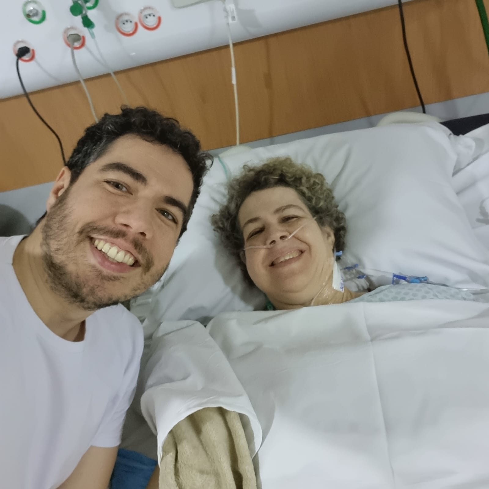

01
Final de Fevereiro de 2026
O começo, e o susto
No fim de fevereiro, a Adriana foi internada. Os primeiros dias foram os mais difíceis, com a UTI, os exames, a espera por respostas. A família se reuniu em torno dela, e o telefone não parou de tocar com mensagens de quem se importava.
